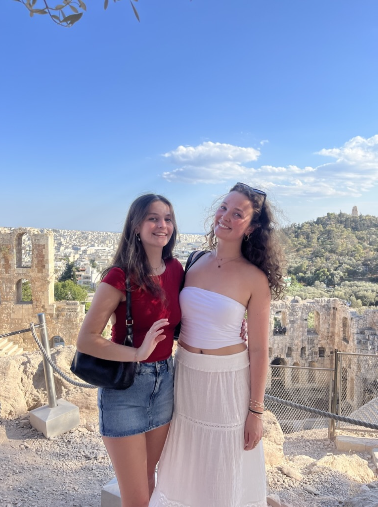
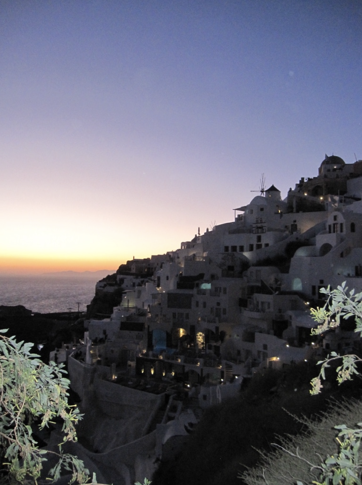
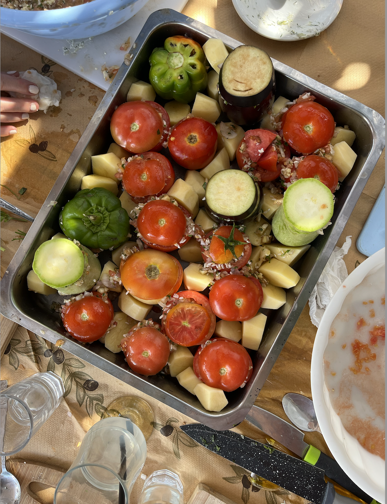

The main part of our trip was spent in Santorini, but we felt the experience wouldn’t be complete without a visit to Athens. This photo is of my sister and me at the Parthenon—right before all of us hilariously slipped on the surprisingly slick rocks at the top!
Athens was an incredible city, so rich in culture and history. As someone who loved history growing up, it was truly special to see so many iconic historical sites in person. It brought to life everything I had learned about in school, making the experience unforgettable.

Santorini was absolutely gorgeous. The iconic white buildings were beyond anything I could have imagined—truly breathtaking to see in person. My older brother, who is an architect, acted as our personal tour guide, giving us insights into the town’s extremely unique architecture.
One of my favorite parts of the visit was the beautiful jewelry shopping. Each shop had walls adorned with stunning silver and gold pieces, many featuring the evil eye, a common and meaningful symbol in Greece. Santorini was such a beautiful city and easily one of my favorite places from my entire study abroad experience.

One of the most memorable parts of this trip was the cooking class we attended. We visited a remote farm where we handpicked fresh vegetables and prepared traditional Greek dishes. It was such a unique experience because our guides joined us for the meal and shared stories about their lives in Greece and their family’s farm.
They told us how the farm had been passed down through generations, providing the local community with fresh vegetables, wine, and olive oil. The meal we prepared was absolutely delicious, but what made it truly special was being part of this experience and learning about the rich history of their family and farm.

{kind=link}

{kind=link}
{kind=link}